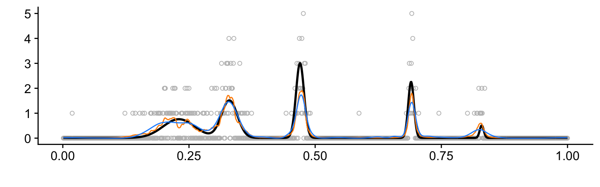
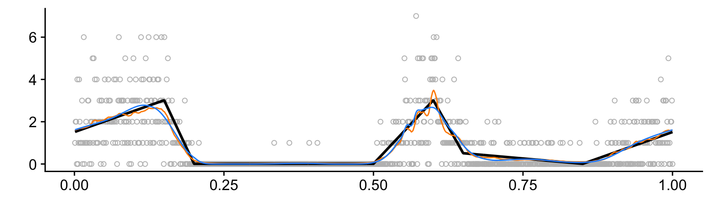
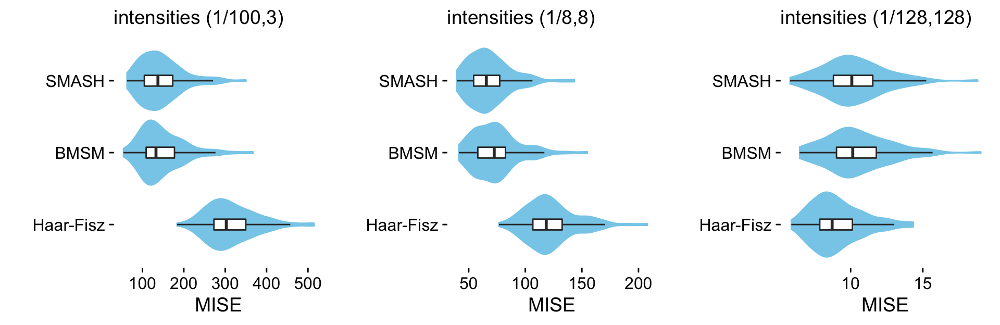
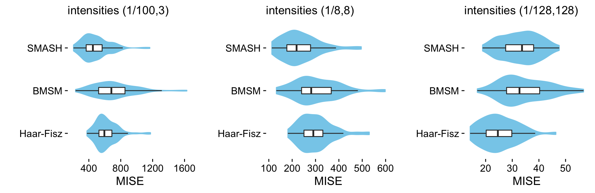
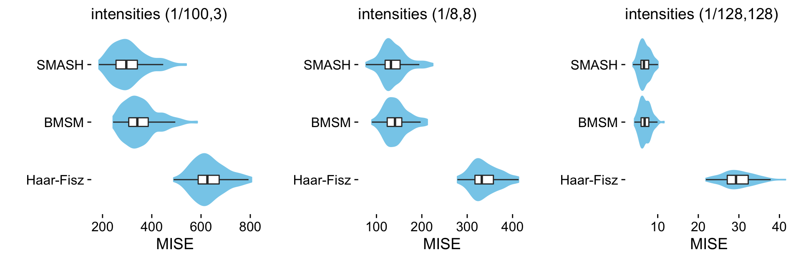
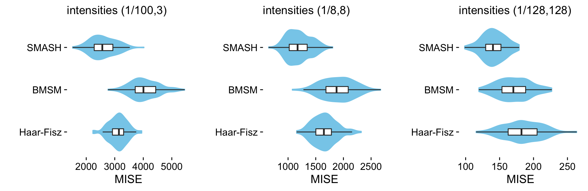

Plots and tables summarizing results of Poisson simulations
Zhengrong Xing, Peter Carbonetto and Matthew Stephens
Last updated: 2019-11-13
Checks: 7 0
Knit directory: smash-paper/analysis/
This reproducible R Markdown analysis was created with workflowr (version 1.5.0). The Checks tab describes the reproducibility checks that were applied when the results were created. The Past versions tab lists the development history.
Great! Since the R Markdown file has been committed to the Git repository, you know the exact version of the code that produced these results.
Great job! The global environment was empty. Objects defined in the global environment can affect the analysis in your R Markdown file in unknown ways. For reproduciblity it’s best to always run the code in an empty environment.
The command set.seed(1) was run prior to running the code in the R Markdown file. Setting a seed ensures that any results that rely on randomness, e.g. subsampling or permutations, are reproducible.
Great job! Recording the operating system, R version, and package versions is critical for reproducibility.
Nice! There were no cached chunks for this analysis, so you can be confident that you successfully produced the results during this run.
Great job! Using relative paths to the files within your workflowr project makes it easier to run your code on other machines.
Great! You are using Git for version control. Tracking code development and connecting the code version to the results is critical for reproducibility. The version displayed above was the version of the Git repository at the time these results were generated.
Note that you need to be careful to ensure that all relevant files for the analysis have been committed to Git prior to generating the results (you can use wflow_publish or wflow_git_commit). workflowr only checks the R Markdown file, but you know if there are other scripts or data files that it depends on. Below is the status of the Git repository when the results were generated:
Ignored files:
Ignored: dsc/code/Wavelab850/MEXSource/CPAnalysis.mexmac
Ignored: dsc/code/Wavelab850/MEXSource/DownDyadHi.mexmac
Ignored: dsc/code/Wavelab850/MEXSource/DownDyadLo.mexmac
Ignored: dsc/code/Wavelab850/MEXSource/FAIPT.mexmac
Ignored: dsc/code/Wavelab850/MEXSource/FCPSynthesis.mexmac
Ignored: dsc/code/Wavelab850/MEXSource/FMIPT.mexmac
Ignored: dsc/code/Wavelab850/MEXSource/FWPSynthesis.mexmac
Ignored: dsc/code/Wavelab850/MEXSource/FWT2_PO.mexmac
Ignored: dsc/code/Wavelab850/MEXSource/FWT_PBS.mexmac
Ignored: dsc/code/Wavelab850/MEXSource/FWT_PO.mexmac
Ignored: dsc/code/Wavelab850/MEXSource/FWT_TI.mexmac
Ignored: dsc/code/Wavelab850/MEXSource/IAIPT.mexmac
Ignored: dsc/code/Wavelab850/MEXSource/IMIPT.mexmac
Ignored: dsc/code/Wavelab850/MEXSource/IWT2_PO.mexmac
Ignored: dsc/code/Wavelab850/MEXSource/IWT_PBS.mexmac
Ignored: dsc/code/Wavelab850/MEXSource/IWT_PO.mexmac
Ignored: dsc/code/Wavelab850/MEXSource/IWT_TI.mexmac
Ignored: dsc/code/Wavelab850/MEXSource/LMIRefineSeq.mexmac
Ignored: dsc/code/Wavelab850/MEXSource/MedRefineSeq.mexmac
Ignored: dsc/code/Wavelab850/MEXSource/UpDyadHi.mexmac
Ignored: dsc/code/Wavelab850/MEXSource/UpDyadLo.mexmac
Ignored: dsc/code/Wavelab850/MEXSource/WPAnalysis.mexmac
Ignored: dsc/code/Wavelab850/MEXSource/dct_ii.mexmac
Ignored: dsc/code/Wavelab850/MEXSource/dct_iii.mexmac
Ignored: dsc/code/Wavelab850/MEXSource/dct_iv.mexmac
Ignored: dsc/code/Wavelab850/MEXSource/dst_ii.mexmac
Ignored: dsc/code/Wavelab850/MEXSource/dst_iii.mexmac
Untracked files:
Untracked: files.txt
Note that any generated files, e.g. HTML, png, CSS, etc., are not included in this status report because it is ok for generated content to have uncommitted changes.
These are the previous versions of the R Markdown and HTML files. If you’ve configured a remote Git repository (see ?wflow_git_remote), click on the hyperlinks in the table below to view them.
| File | Version | Author | Date | Message |
|---|---|---|---|---|
| Rmd | f6a2109 | Peter Carbonetto | 2019-11-14 | wflow_publish(“poisson.Rmd”) |
| Rmd | dded357 | Peter Carbonetto | 2019-11-13 | Some small adjustments to the plotting code in poisson.Rmd. |
| html | 248e31e | Peter Carbonetto | 2019-11-13 | Re-built poisson analysis after simplifying creation of a violin plot. |
| Rmd | 06f113f | Peter Carbonetto | 2019-11-13 | wflow_publish(“poisson.Rmd”) |
| html | 8925b13 | Peter Carbonetto | 2019-11-13 | Re-built poisson analysis after implementing Bursts and Heavisine functions. |
| Rmd | 4576145 | Peter Carbonetto | 2019-11-13 | wflow_publish(“poisson.Rmd”) |
| html | c890a40 | Peter Carbonetto | 2019-11-12 | Re-ran poisson and gaussian_signals analyses with new code in signals.R. |
| Rmd | 1f76230 | Peter Carbonetto | 2019-11-12 | Restructured some of the code in signals.R. |
| html | 1f76230 | Peter Carbonetto | 2019-11-12 | Restructured some of the code in signals.R. |
| Rmd | 35a397a | Peter Carbonetto | 2019-11-12 | Simplifying some of the code in poisson.Rmd. |
| html | 187ec0c | Peter Carbonetto | 2019-11-12 | Fixed formatting of table in poisson analysis. |
| Rmd | 05e491f | Peter Carbonetto | 2019-11-12 | wflow_publish(“poisson.Rmd”) |
| html | a334fd2 | Peter Carbonetto | 2019-11-12 | More adjustments to plots in poisson analysis. |
| Rmd | 224a580 | Peter Carbonetto | 2019-11-12 | wflow_publish(“poisson.Rmd”) |
| html | 34f42ac | Peter Carbonetto | 2019-11-12 | Adjusted violin plots in poisson analysis. |
| Rmd | 8333706 | Peter Carbonetto | 2019-11-12 | wflow_publish(“poisson.Rmd”) |
| html | eda1295 | Peter Carbonetto | 2019-11-12 | Re-built poisson analysis using workflowr 1.5.0. |
| Rmd | a0ea389 | Peter Carbonetto | 2019-11-12 | wflow_publish(“poisson.Rmd”) |
| html | f0221c5 | Zhengrong Xing | 2019-10-28 | address some reviewer comments |
| html | bf8b368 | Peter Carbonetto | 2018-12-21 | Fixed plots for Bursts simulations. |
| Rmd | b9f5cd3 | Peter Carbonetto | 2018-12-21 | wflow_publish(c(“index.Rmd”, “poisson.Rmd”)) |
| html | 3441667 | Peter Carbonetto | 2018-12-21 | Revised Bumps results in poisson.Rmd. |
| Rmd | 7db6b71 | Peter Carbonetto | 2018-12-21 | wflow_publish(“poisson.Rmd”) |
| html | ee06399 | Peter Carbonetto | 2018-12-21 | Added plots & tables for Clipped Blocks and Bumps simulations. |
| Rmd | e8bc009 | Peter Carbonetto | 2018-12-21 | wflow_publish(“poisson.Rmd”) |
| html | 5adee34 | Peter Carbonetto | 2018-12-21 | Addd plots and table for Bursts simulations. |
| Rmd | 3776af8 | Peter Carbonetto | 2018-12-21 | wflow_publish(“poisson.Rmd”) |
| html | c333197 | Peter Carbonetto | 2018-12-21 | A few small revsions to the code at the beginning of poisson.Rmd. |
| Rmd | b42715c | Peter Carbonetto | 2018-12-21 | wflow_publish(“poisson.Rmd”) |
| html | 8e3900b | Peter Carbonetto | 2018-12-21 | Updated text at the beginning of poisson.Rmd. |
| Rmd | d351039 | Peter Carbonetto | 2018-12-21 | wflow_publish(“poisson.Rmd”) |
| html | bd84eae | Peter Carbonetto | 2018-12-20 | Build site. |
| Rmd | 51620b3 | Peter Carbonetto | 2018-12-20 | wflow_publish(“poisson.Rmd”) |
| html | bda4fbc | Peter Carbonetto | 2018-12-20 | Wrote function create.violin.plots in poisson.Rmd. |
| Rmd | ed77c12 | Peter Carbonetto | 2018-12-20 | Fixed some merging issues. |
| html | ed961b1 | Peter Carbonetto | 2018-12-20 | Added violin plots for the Spikes and Angles Poisson simulation results. |
| Rmd | 68ce493 | Peter Carbonetto | 2018-12-20 | wflow_publish(“poisson.Rmd”) |
| html | 2acee22 | Peter Carbonetto | 2018-12-20 | Added plots for all test functions. |
| html | 78afaca | Peter Carbonetto | 2018-12-20 | Added plots for all test functions. |
| Rmd | 987a861 | Peter Carbonetto | 2018-12-20 | wflow_publish(“poisson.Rmd”) |
| html | 7908551 | Peter Carbonetto | 2018-12-20 | Built very first draft of the “poisson” workflowr page. |
| Rmd | b3f5b57 | Peter Carbonetto | 2018-12-20 | wflow_publish(“poisson.Rmd”) |
| Rmd | d36bfca | Peter Carbonetto | 2018-12-20 | Misc. revisions to READMEs and documentation. |
| Rmd | 7aa0b11 | Peter Carbonetto | 2018-12-20 | Working on poisson analysis. |
| Rmd | 3c562ea | Peter Carbonetto | 2018-12-19 | Moved poisson_tables.Rmd to poisson.Rmd. |
| Rmd | 190c855 | Peter Carbonetto | 2018-12-19 | Working on R Markdown for Poisson results. |
| Rmd | 25ff9c3 | Peter Carbonetto | 2018-12-19 | Re-organized some of the files used in the Poisson numerical comparisons. |
Here we create plots and tables to compare various methods, including SMASH, for reconstructing a spatially structured signal from Poisson-distributed data. Similar to the Gaussian simulations, we generated data sets using a variety of test functions and intensity ranges. Specifically, we considered 6 test functions, rescaling the test function so that the smallest intensity was \(x\) and the largest intensity was \(y\), with \((x,y)\) set to either \((1/100, 3)\), \((1/8, 8)\) or \((1/128, 128)\).
For each combination of test function and intensity range, we simulated 100 data sets. In the plots and tables below, we summarize the error (MISE) in the estimates computed in the 100 data sets from each simulation setting. A final summary of all the simulations is shown at the end.
The plots shown below for the “Bursts” simulations, as well as the bar plots summarizing all the Poisson simulations, were included in the manuscript.
Analysis settings
We will view the results from these methods:
methods <- c("ash","BMSM","haarfisz_R")These variables specify the row and column names for the tables:
These are settings used in plotting the test functions:
n <- 1024
t <- 1:n/nSet up environment
Load the knitr, kableExtra, ggplot2 and cowplot packages.
library(knitr)
library(kableExtra)
library(ggplot2)
library(cowplot)Some of the test functions are defined in signals.R, so we load them here. Some additional functions are defined in file poisson.functions.R.
source("../code/signals.R")
source("../code/poisson.functions.R")Load results
Load the results of the simulation experiments.
load("../output/pois.RData")Spikes data
This is the function used to simulate the “Spikes” data sets at different ranges of intensities:
mu.s <- spike.f(t)
plot(t,mu.s,xlab = "",ylab = "",type = "l",lwd = 2,col = "darkorange")
| Version | Author | Date |
|---|---|---|
| a334fd2 | Peter Carbonetto | 2019-11-12 |
| eda1295 | Peter Carbonetto | 2019-11-12 |
| f0221c5 | Zhengrong Xing | 2019-10-28 |
| bda4fbc | Peter Carbonetto | 2018-12-20 |
| ed77c12 | Peter Carbonetto | 2018-12-20 |
| ed961b1 | Peter Carbonetto | 2018-12-20 |
| 2acee22 | Peter Carbonetto | 2018-12-20 |
| 78afaca | Peter Carbonetto | 2018-12-20 |
This table summarizes the results from the Spikes simulations:
mise.s.table <- cbind(mise.s.1[methods],
mise.s.8[methods],
mise.s.128[methods])
create.results.table(mise.s.table)| (1/100, 3) | (1/8, 8) | (1/128, 128) | |
|---|---|---|---|
| SMASH | 690.0116 | 329.2584 | 48.86856 |
| BMSM | 1007.3414 | 397.7901 | 41.87725 |
| Haar-Fisz | 722.1856 | 287.4406 | 18.05736 |
Each column shows the results at a different range of intensities. The individual table entries give the average error (MISE) in the estimates, in which the average is taken over the 100 data sets simulated at the given range of intensities.
The combined violin-boxplots provide a more detailed summary of the same results:
mise.hf.ti.r.s.1 <- colMeans(rbind(mise.hf.ti.r.4.s.1,
mise.hf.ti.r.5.s.1,
mise.hf.ti.r.6.s.1,
mise.hf.ti.r.7.s.1))
mise.hf.ti.r.s.8 <- colMeans(rbind(mise.hf.ti.r.4.s.8,
mise.hf.ti.r.5.s.8,
mise.hf.ti.r.6.s.8,
mise.hf.ti.r.7.s.8))
mise.hf.ti.r.s.128 <- colMeans(rbind(mise.hf.ti.r.4.s.128,
mise.hf.ti.r.5.s.128,
mise.hf.ti.r.6.s.128,
mise.hf.ti.r.7.s.128))
pdat.s1 <- get.violin.plot.data(list("Haar-Fisz" = mise.hf.ti.r.s.1,
"BMSM" = mise.BMSM.s.1,
"SMASH" = mise.ash.s.1))
pdat.s8 <- get.violin.plot.data(list("Haar-Fisz" = mise.hf.ti.r.s.8,
"BMSM" = mise.BMSM.s.8,
"SMASH" = mise.ash.s.8))
pdat.s128 <- get.violin.plot.data(list("Haar-Fisz" = mise.hf.ti.r.s.128,
"BMSM" = mise.BMSM.s.128,
"SMASH" = mise.ash.s.128))
create.violin.plots(pdat.s1,pdat.s8,pdat.s128)
Angles data
This is the function used to simulate the “Angles” data sets at different ranges of intensities:
mu.ang <- angles.f(t)
plot(t,mu.ang,xlab = "",ylab = "",type = "l",lwd = 2,col = "darkorange")
| Version | Author | Date |
|---|---|---|
| a334fd2 | Peter Carbonetto | 2019-11-12 |
| eda1295 | Peter Carbonetto | 2019-11-12 |
| f0221c5 | Zhengrong Xing | 2019-10-28 |
| bda4fbc | Peter Carbonetto | 2018-12-20 |
| ed77c12 | Peter Carbonetto | 2018-12-20 |
| ed961b1 | Peter Carbonetto | 2018-12-20 |
| 2acee22 | Peter Carbonetto | 2018-12-20 |
| 78afaca | Peter Carbonetto | 2018-12-20 |
This table summarizes the results from the Angles simulations:
mise.ang.table <- cbind(mise.ang.1[methods],
mise.ang.8[methods],
mise.ang.128[methods])
create.results.table(mise.ang.table)| (1/100, 3) | (1/8, 8) | (1/128, 128) | |
|---|---|---|---|
| SMASH | 145.2623 | 68.47102 | 10.249294 |
| BMSM | 147.3973 | 73.86633 | 10.491953 |
| Haar-Fisz | 314.4088 | 122.79203 | 9.082691 |
Each column shows the results at a different range of intensities. The individual table entries give the average error (MISE) in the estimates, in which the average is taken over the 100 data sets simulated at the given range of intensities.
The combined violin-boxplots provide a visualization of the same results:
mise.hf.ti.r.ang.1 <- colMeans(rbind(mise.hf.ti.r.4.ang.1,
mise.hf.ti.r.5.ang.1,
mise.hf.ti.r.6.ang.1,
mise.hf.ti.r.7.ang.1))
mise.hf.ti.r.ang.8 <- colMeans(rbind(mise.hf.ti.r.4.ang.8,
mise.hf.ti.r.5.ang.8,
mise.hf.ti.r.6.ang.8,
mise.hf.ti.r.7.ang.8))
mise.hf.ti.r.ang.128 <- colMeans(rbind(mise.hf.ti.r.4.ang.128,
mise.hf.ti.r.5.ang.128,
mise.hf.ti.r.6.ang.128,
mise.hf.ti.r.7.ang.128))
pdat.ang1 <- get.violin.plot.data(list("Haar-Fisz" = mise.hf.ti.r.ang.1,
"BMSM" = mise.BMSM.ang.1,
"SMASH" = mise.ash.ang.1))
pdat.ang8 <- get.violin.plot.data(list("Haar-Fisz" = mise.hf.ti.r.ang.8,
"BMSM" = mise.BMSM.ang.8,
"SMASH" = mise.ash.ang.8))
pdat.ang128 <- get.violin.plot.data(list("Haar-Fisz" = mise.hf.ti.r.ang.128,
"BMSM" = mise.BMSM.ang.128,
"SMASH" = mise.ash.ang.128))
create.violin.plots(pdat.ang1,pdat.ang8,pdat.ang128)
Heavisine data
This is the function used to simulate the “Heavisine” data sets at different ranges of intensities:
mu.hs <- heavi.f(t)
plot(t,mu.hs,xlab = "",ylab = "",type = "l",lwd = 2,col = "darkorange")
| Version | Author | Date |
|---|---|---|
| a334fd2 | Peter Carbonetto | 2019-11-12 |
| eda1295 | Peter Carbonetto | 2019-11-12 |
| f0221c5 | Zhengrong Xing | 2019-10-28 |
| bda4fbc | Peter Carbonetto | 2018-12-20 |
| ed77c12 | Peter Carbonetto | 2018-12-20 |
| ed961b1 | Peter Carbonetto | 2018-12-20 |
| 2acee22 | Peter Carbonetto | 2018-12-20 |
| 78afaca | Peter Carbonetto | 2018-12-20 |
This table summarizes the results from the Heavisine simulations:
mise.hs.table <- cbind(mise.hs.1[methods],
mise.hs.8[methods],
mise.hs.128[methods])
create.results.table(mise.hs.table)| (1/100, 3) | (1/8, 8) | (1/128, 128) | |
|---|---|---|---|
| SMASH | 81.41384 | 43.21293 | 7.213658 |
| BMSM | 85.28578 | 44.22229 | 7.353458 |
| Haar-Fisz | 274.25562 | 105.47241 | 9.225844 |
Each column shows results at a different range of intensities. The individual table entries give the average error (MISE) in the estimates, in which the average is taken over the 100 data sets simulated at the given range of intensities.
The combined violin-boxplots provide a visualization of the same results:
mise.hf.ti.r.hs.1 <- colMeans(rbind(mise.hf.ti.r.4.hs.1,
mise.hf.ti.r.5.hs.1,
mise.hf.ti.r.6.hs.1,
mise.hf.ti.r.7.hs.1))
mise.hf.ti.r.hs.8 <- colMeans(rbind(mise.hf.ti.r.4.hs.8,
mise.hf.ti.r.5.hs.8,
mise.hf.ti.r.6.hs.8,
mise.hf.ti.r.7.hs.8))
mise.hf.ti.r.hs.128 <- colMeans(rbind(mise.hf.ti.r.4.hs.128,
mise.hf.ti.r.5.hs.128,
mise.hf.ti.r.6.hs.128,
mise.hf.ti.r.7.hs.128))
pdat.hs1 <- get.violin.plot.data(list("Haar-Fisz" = mise.hf.ti.r.hs.1,
"BMSM" = mise.BMSM.hs.1,
"SMASH" = mise.ash.hs.1))
pdat.hs8 <- get.violin.plot.data(list("Haar-Fisz" = mise.hf.ti.r.hs.8,
"BMSM" = mise.BMSM.hs.8,
"SMASH" = mise.ash.hs.8))
pdat.hs128 <- get.violin.plot.data(list("Haar-Fisz" = mise.hf.ti.r.hs.128,
"BMSM" = mise.BMSM.hs.128,
"SMASH" = mise.ash.hs.128))
create.violin.plots(pdat.hs1,pdat.hs8,pdat.hs128)
Bursts data
This is the function used to simulate the “Bursts” data sets at different ranges of intensities:
mu.bur <- bursts.f(t)
plot(t,mu.bur,xlab = "",ylab = "",type = "l",lwd = 2,col = "darkorange")
| Version | Author | Date |
|---|---|---|
| a334fd2 | Peter Carbonetto | 2019-11-12 |
| eda1295 | Peter Carbonetto | 2019-11-12 |
| f0221c5 | Zhengrong Xing | 2019-10-28 |
| bda4fbc | Peter Carbonetto | 2018-12-20 |
| ed77c12 | Peter Carbonetto | 2018-12-20 |
| ed961b1 | Peter Carbonetto | 2018-12-20 |
| 2acee22 | Peter Carbonetto | 2018-12-20 |
| 78afaca | Peter Carbonetto | 2018-12-20 |
This table summarizes the results from the Bursts simulations:
mise.bur.table <- cbind(mise.bur.1[methods],
mise.bur.8[methods],
mise.bur.128[methods])
create.results.table(mise.bur.table)| (1/100, 3) | (1/8, 8) | (1/128, 128) | |
|---|---|---|---|
| SMASH | 487.3353 | 234.3490 | 33.11112 |
| BMSM | 706.0353 | 301.8645 | 34.42320 |
| Haar-Fisz | 618.3874 | 299.3932 | 25.19659 |
Each column shows results at a different range of intensities. The individual table entries give the average error (MISE) in the estimates, in which the average is taken over the 100 data sets simulated at the given range of intensities.
The combined violin-boxplots provide a visualization of the same results:
mise.hf.ti.r.bur.1 <- colMeans(rbind(mise.hf.ti.r.4.bur.1,
mise.hf.ti.r.5.bur.1,
mise.hf.ti.r.6.bur.1,
mise.hf.ti.r.7.bur.1))
mise.hf.ti.r.bur.8 <- colMeans(rbind(mise.hf.ti.r.4.bur.8,
mise.hf.ti.r.5.bur.8,
mise.hf.ti.r.6.bur.8,
mise.hf.ti.r.7.bur.8))
mise.hf.ti.r.bur.128 <- colMeans(rbind(mise.hf.ti.r.4.bur.128,
mise.hf.ti.r.5.bur.128,
mise.hf.ti.r.6.bur.128,
mise.hf.ti.r.7.bur.128))
pdat.bur1 <- get.violin.plot.data(list("Haar-Fisz" = mise.hf.ti.r.bur.1,
"BMSM" = mise.BMSM.bur.1,
"SMASH" = mise.ash.bur.1))
pdat.bur8 <- get.violin.plot.data(list("Haar-Fisz" = mise.hf.ti.r.bur.8,
"BMSM" = mise.BMSM.bur.8,
"SMASH" = mise.ash.bur.8))
pdat.bur128 <- get.violin.plot.data(list("Haar-Fisz" = mise.hf.ti.r.bur.128,
"BMSM" = mise.BMSM.bur.128,
"SMASH" = mise.ash.bur.128))
create.violin.plots(pdat.bur1,pdat.bur8,pdat.bur128)
Clipped Blocks data
This is the function used to simulate the “Clipped Blocks” data sets at different ranges of intensities:
mu.cb <- cblocks.f(t)
plot(t,mu.cb,xlab = "",ylab = "",type = "l",lwd = 2,col = "darkorange")
| Version | Author | Date |
|---|---|---|
| a334fd2 | Peter Carbonetto | 2019-11-12 |
| eda1295 | Peter Carbonetto | 2019-11-12 |
| f0221c5 | Zhengrong Xing | 2019-10-28 |
| bda4fbc | Peter Carbonetto | 2018-12-20 |
| ed77c12 | Peter Carbonetto | 2018-12-20 |
| ed961b1 | Peter Carbonetto | 2018-12-20 |
| 2acee22 | Peter Carbonetto | 2018-12-20 |
| 78afaca | Peter Carbonetto | 2018-12-20 |
This table summarizes the results from the Clipped Blocks simulations:
mise.cb.table <- cbind(mise.cb.1[methods],
mise.cb.8[methods],
mise.cb.128[methods])
create.results.table(mise.cb.table)| (1/100, 3) | (1/8, 8) | (1/128, 128) | |
|---|---|---|---|
| SMASH | 307.8030 | 137.2787 | 6.822219 |
| BMSM | 355.1542 | 143.0926 | 6.911608 |
| Haar-Fisz | 632.2052 | 338.5486 | 29.719806 |
Each column shows results at a different range of intensities. The individual table entries give the average error (MISE) in the estimates, in which the average is taken over the 100 data sets simulated at the given range of intensities.
The combined violin-boxplots provide a visualization of the same results:
mise.hf.ti.r.cb.1 <- colMeans(rbind(mise.hf.ti.r.4.cb.1,
mise.hf.ti.r.5.cb.1,
mise.hf.ti.r.6.cb.1,
mise.hf.ti.r.7.cb.1))
mise.hf.ti.r.cb.8 <- colMeans(rbind(mise.hf.ti.r.4.cb.8,
mise.hf.ti.r.5.cb.8,
mise.hf.ti.r.6.cb.8,
mise.hf.ti.r.7.cb.8))
mise.hf.ti.r.cb.128 <- colMeans(rbind(mise.hf.ti.r.4.cb.128,
mise.hf.ti.r.5.cb.128,
mise.hf.ti.r.6.cb.128,
mise.hf.ti.r.7.cb.128))
pdat.cb1 <- get.violin.plot.data(list("Haar-Fisz" = mise.hf.ti.r.cb.1,
"BMSM" = mise.BMSM.cb.1,
"SMASH" = mise.ash.cb.1))
pdat.cb8 <- get.violin.plot.data(list("Haar-Fisz" = mise.hf.ti.r.cb.8,
"BMSM" = mise.BMSM.cb.8,
"SMASH" = mise.ash.cb.8))
pdat.cb128 <- get.violin.plot.data(list("Haar-Fisz" = mise.hf.ti.r.cb.128,
"BMSM" = mise.BMSM.cb.128,
"SMASH" = mise.ash.cb.128))
create.violin.plots(pdat.cb1,pdat.cb8,pdat.cb128)
Bumps data
This is the function used to simulate the “Bumps” data sets at different ranges of intensities:
mu.b <- bumps.f(t)
plot(t,mu.b,xlab = "",ylab = "",type = "l",lwd = 2,col = "darkorange")
| Version | Author | Date |
|---|---|---|
| a334fd2 | Peter Carbonetto | 2019-11-12 |
| eda1295 | Peter Carbonetto | 2019-11-12 |
| f0221c5 | Zhengrong Xing | 2019-10-28 |
| bda4fbc | Peter Carbonetto | 2018-12-20 |
| ed77c12 | Peter Carbonetto | 2018-12-20 |
| ed961b1 | Peter Carbonetto | 2018-12-20 |
| 2acee22 | Peter Carbonetto | 2018-12-20 |
| 78afaca | Peter Carbonetto | 2018-12-20 |
This table summarizes the results from the Bumps simulations:
mise.b.table <- cbind(mise.b.1[methods],
mise.b.8[methods],
mise.b.128[methods])
create.results.table(mise.b.table)| (1/100, 3) | (1/8, 8) | (1/128, 128) | |
|---|---|---|---|
| SMASH | 2597.462 | 1194.624 | 141.2119 |
| BMSM | 4036.773 | 1889.937 | 171.0706 |
| Haar-Fisz | 3113.365 | 1658.742 | 184.6601 |
Each column shows results at a different range of intensities. The individual table entries give the average error (MISE) in the estimates, in which the average is taken over the 100 data sets simulated at the given range of intensities.
The combined violin-boxplots provide a visualization of the same results:
mise.hf.ti.r.b.1 <- colMeans(rbind(mise.hf.ti.r.4.b.1,
mise.hf.ti.r.5.b.1,
mise.hf.ti.r.6.b.1,
mise.hf.ti.r.7.b.1))
mise.hf.ti.r.b.8 <- colMeans(rbind(mise.hf.ti.r.4.b.8,
mise.hf.ti.r.5.b.8,
mise.hf.ti.r.6.b.8,
mise.hf.ti.r.7.b.8))
mise.hf.ti.r.b.128 <- colMeans(rbind(mise.hf.ti.r.4.b.128,
mise.hf.ti.r.5.b.128,
mise.hf.ti.r.6.b.128,
mise.hf.ti.r.7.b.128))
pdat.b1 <- get.violin.plot.data(list("Haar-Fisz" = mise.hf.ti.r.b.1,
"BMSM" = mise.BMSM.b.1,
"SMASH" = mise.ash.b.1))
pdat.b8 <- get.violin.plot.data(list("Haar-Fisz" = mise.hf.ti.r.b.8,
"BMSM" = mise.BMSM.b.8,
"SMASH" = mise.ash.b.8))
pdat.b128 <- get.violin.plot.data(list("Haar-Fisz" = mise.hf.ti.r.b.128,
"BMSM" = mise.BMSM.b.128,
"SMASH" = mise.ash.b.128))
create.violin.plots(pdat.b1,pdat.b8,pdat.b128)
Combined results
Create plot showing combined results here.
sessionInfo()
# R version 3.4.3 (2017-11-30)
# Platform: x86_64-apple-darwin15.6.0 (64-bit)
# Running under: macOS High Sierra 10.13.6
#
# Matrix products: default
# BLAS: /Library/Frameworks/R.framework/Versions/3.4/Resources/lib/libRblas.0.dylib
# LAPACK: /Library/Frameworks/R.framework/Versions/3.4/Resources/lib/libRlapack.dylib
#
# locale:
# [1] en_US.UTF-8/en_US.UTF-8/en_US.UTF-8/C/en_US.UTF-8/en_US.UTF-8
#
# attached base packages:
# [1] stats graphics grDevices utils datasets methods base
#
# other attached packages:
# [1] cowplot_0.9.4 ggplot2_3.2.0 kableExtra_1.0.1 knitr_1.23
#
# loaded via a namespace (and not attached):
# [1] Rcpp_1.0.1 highr_0.8 compiler_3.4.3
# [4] pillar_1.3.1 later_0.8.0 git2r_0.26.1
# [7] plyr_1.8.4 workflowr_1.5.0 tools_3.4.3
# [10] digest_0.6.18 gtable_0.2.0 evaluate_0.13
# [13] tibble_2.1.1 viridisLite_0.3.0 pkgconfig_2.0.2
# [16] rlang_0.3.1 rstudioapi_0.10 yaml_2.2.0
# [19] xfun_0.7 withr_2.1.2.9000 dplyr_0.8.0.1
# [22] stringr_1.4.0 httr_1.4.0 xml2_1.2.0
# [25] fs_1.2.7 hms_0.4.2 tidyselect_0.2.5
# [28] grid_3.4.3 rprojroot_1.3-2 webshot_0.5.1
# [31] glue_1.3.1 R6_2.4.0 rmarkdown_1.16
# [34] purrr_0.2.5 readr_1.3.1 magrittr_1.5
# [37] whisker_0.3-2 backports_1.1.2 scales_0.5.0
# [40] promises_1.0.1 htmltools_0.3.6 assertthat_0.2.1
# [43] rvest_0.3.2 colorspace_1.4-0 httpuv_1.5.0
# [46] labeling_0.3 stringi_1.4.3 lazyeval_0.2.1
# [49] munsell_0.4.3 crayon_1.3.4